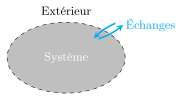
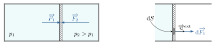
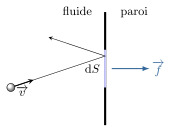
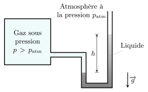
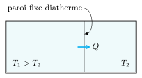
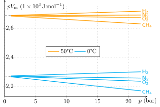
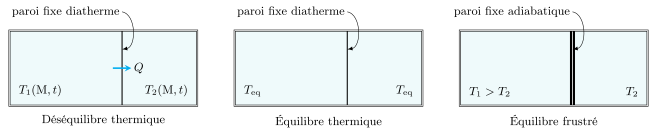
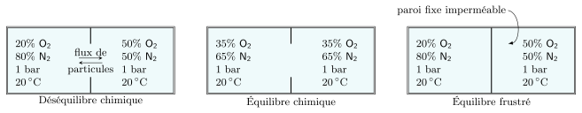
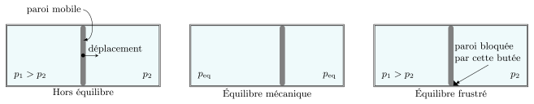
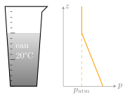

La thermodynamique étudie les systèmes macroscopiques constitués d’un très grand
nombre de particules. Ce nombre \(N\) doit être suffisamment grand pour que les fluctuations
liées à la nature microscopique sous-jacente puissent être complètement négligées. En
pratique, avec \(𝑁 \sim 1020\) molécules, la loi des grands nombres nous enseigne que les
fluctuations relatives sont de l’ordre de \(\frac{1}{\sqrt{N}} \sim 10^{-10}\). En d’autres
termes, nous ne voyons que les effets moyens, et les fluctuations microscopiques sont
négligeables, voire non mesurables.
Exemple :
Isolons par la pensée un petit cube d’air d’arête \(0{,}1\,\rm{mm}\) dans les conditions
normales de pression et de température. Peut-on dire que ce système est un système
thermodynamique ? Pour répondre à cette question, il suffit d’estimer \(N\). Dans les
conditions standards, \(1\,\rm{mole}\) occupe environ \(25\,\rm{L}\). Le volume étant ici de
\(1 \times 10^{−9}\,\rm{L}\), le cube contient \(4 \times 10^{−11}\,\rm{mol}\) soit
\(N = 24 \times 10^{12}\) molécules. Les fluctuations relatives sont de l’ordre de
\(0{,}2 \times 10^{-6}\), largement négligeables. Ce système entre donc dans le cadre de la
thermodynamique.
Ce petit volume que l’on peut traiter comme un point à notre échelle d’observation, reste
macroscopique au sens de la thermodynamique. On parle d’échelle mésoscopique.

Le système peut échanger avec l’extérieur, de l’énergie, de la matière et du
volume.
Le système est séparé de l’extérieur par une paroi réelle ou fictive. Selon la nature de
cette paroi, certains échanges sont possibles ou interdits.
Si la paroi est imperméable, le système est fermé.
La paroi est dite adiabatique quand elle est imperméable à tout transfert thermique.
Sinon, elle est dite diatherme.
Enfin le système est isolé quand aucun échange avec l’extérieur n’est possible.
Les différents types d’échange.
Échange
Nature de la paroi
matière
perméable
énergie thermique
diatherme
volume
déformable
rien
imperméable, adiabatique et indéformable
Variables d’état
Pour rendre compte de l’état macroscopique du système, on utilise un petit jeu de paramètres
mesurables que l’on appelle variables d’état. Ce jeu de paramètres dépend du système
étudié et de ses transformations.
Exemple :
Pour décrire un mélange gazeux \(\{\rm{A_{(g)}, B_{(g)}}\}\) on peut s’intéresser aux
variables d’état suivantes :
son volume \(V\)
sa pression \(p\)
sa température \(T\)
les nombres de mole \(n_\rm{A}\) et \(n_\rm{B}\)
son énergie interne \(U\)
sa masse volumique \(\rho\)
Parmi ces variables, on en distingue deux types :
Celles qui varient comme la quantité de matière du système sont dites
extensives.
Celles qui n’en dépendent pas sont dites intensives. Ces grandeurs,
contrairement aux grandeurs extensives, peuvent être définies localement en chaque point
du système.
Exemple :
La masse, la quantité de matière, le volume, l’énergie sont des variables extensives.
La pression, la masse volumique, la température sont des variables intensives que l’on peut
définir localement.
Si \(X_1\) et \(X_2\) sont deux grandeurs extensives, alors tout rapport \(X_1/X_2\) est
indépendant des quantités de matière et forme donc une grandeur intensive.
Quelques grandeurs intensives, formées par le rapport de deux grandeurs
extensives.
Définition de la grandeur
Nature de la grandeur
\(\rho = m/V\)
masse volumique (\(\rm{kg.m^{-3}}\))
\(v = V/m\)
volume massique (\(\rm{m^3.kg^{-1}}\))
\(V_m = V/n\)
volume molaire (\(\rm{m^3.mol^{-1}}\))
\(M = m/n\)
masse molaire (\(\rm{kg.mol^{-1}}\))
\(x_1 = n_1/(n_1 + n_2)\)
fraction molaire (sans dimension)
\(w_1 = m_1/(m_1 + m_2)\)
fraction massique (sans dimension)
\(e_c = \mathcal{E}_c/m\)
énergie cinétique massique (\(\rm{J.kg^{-1}}\))
De la même manière, toute dérivée \(\partial{X_1}/\partial{X_2}\) forme aussi une grandeur
intensive. Nous verrons que la température et la pression sont de ce type.
Les variables d’état ne sont pas toutes indépendantes. Certaines sont liées par des
relations de définition. Par exemple, si l’on connaît le volume \(V\) d’un système ainsi que
sa masse volumique \(\rho\), alors sa masse \(m\) en découle par la définition \(m =
\rho V\).
Il existe également des lois empiriques qui relient certaines variables d’état
lorsque le système est dans un état d’équilibre : ce sont les équations d’état
que nous voyons plus loin.
Notion de pression
Définition
Considérons une enceinte dans laquelle une paroi mobile sépare deux fluides. Du fait de
l’agitation moléculaire sous jacente, chaque fluide exerce une action mécanique sur la
paroi, dite force pressante. Cette force est perpendiculaire à la paroi et d’autant
plus grande que la surface de la paroi considérée est grande. Formellement, un élément de
surface de la paroi, d’aire \(\mathrm{d}S\), subit une force
$$
\quad \boxed{ \overrightarrow{\mathrm{d}F} =
p(M) \mathrm{d}S \overrightarrow{n}{}^{\rm{ext}} }
$$
où \(\overrightarrow{n}{}^{\rm{ext}}\) est un vecteur normal dirigé vers l’extérieur du
fluide.
La grandeur \(p\), appelée pression, est une propriété macroscopique définie en chaque point
du fluide (\(p\) est une grandeur locale ; il s’agit donc d’une variable intensive).
Elle représente une densité surfacique de force, et s’exprime par conséquent en
\(\rm{N.m^{−2}}\) dans le Système international d’unités. Par définition, on nomme
pascal (symbole \(\rm{Pa}\)) cette unité.
$$
\quad \boxed{ 1\,\rm{Pa} = 1\,\rm{N.m^{−2}} }
$$

Forces pressantes exercées sur une paroi mobile.
Interprétation microscopique
C’est à l’échelle microscopique qu’il faut chercher la signification de la pression. La
pression a deux origines :
Le choc des molécules sur la paroi. Les molécules en heurtant les parois de l’enceinte
transfèrent de la quantité de mouvement et donc une force. À chaque choc, la force induite
est d’autant plus intense que les molécules sont lourdes et que leur vitesse est
importante. La force moyenne par unité de surface est appelée pression cinétique. On
montre en physique statistique qu’elle vaut :
$$
\quad p_c = \frac{1}{3} n^* m \overline{v^2}
$$
où \(n^*\) est la densité volumique moléculaire (le nombre de molécules par mètre cube) et
\(\overline{v^2}\) le carré moyen de la vitesse des particules.
Les interactions entre molécules peuvent amplifier ou diminuer cette pression
cinétique. Les collisions moléculaires l’augmentent alors que les interactions attractives
de van der Waals la diminuent.
Finalement, la pression s’écrit :
$$
\quad p_c = \frac{1}{3} n^* m \overline{v^2} + p_m
$$
où \(p_m\) est la pression dite moléculaire liée aux interactions. Ce terme dépend de la
taille des molécules et de la nature des interactions.

Forces pressantes à l’échelle microscopique.
Autres unités
Il existe également d’autres unités de pression encore très utilisées. Par exemple, il est
courant de mesurer la pression à l’aide d’un manomètre à liquide. Celui permet de relier une
différence de pression à une dénivellation. On a :
$$
\quad p - p_{\rm{atm}} = \rho g h
$$

Manomètre à liquide.
On peut donc exprimer une pression en hauteur de colonne. Le torr est l’unité associé à une
colonne de mercure. La correspondance est la suivante :
$$
\quad 760 \, \rm{mmHg} = 760 \, \rm{torr} = 1 \, \rm{atm} = 1{,}013 \times 10^5 \, \rm{Pa}
$$
Autres unités de pression couramment utilisées
Unités
Équivalence en pascal
\(1 \, \rm{bar}\)
\(10^5 \, \rm{Pa}\)
\(1 \, \rm{atm}\)
\(1{,}013\,25 \times 10^5 \, \rm{Pa}\)
\(1 \, \rm{torr}\)
\(133{,}3 \, \rm{Pa}\)
Température absolue
Considérons par exemple deux fluides, notés 1 et 2, séparés par une paroi matérielle fixe.
La paroi étant fixe aucun échange d’énergie macroscopique n’est possible. Cependant, à
l’échelle microscopique, les molécules peuvent échanger de l’énergie par collision avec la
paroi. Ce type d’échange microscopique est appelé transfert thermique. L’intensité de
ce transfert thermique dépend notamment de la structure de la paroi.
Par définition, la température \(T\) est une propriété macroscopique qui
vérifie :
Si \(T_1=T_2\), le système est à l’équilibre thermique et le transfert thermique est
nul.
Si \(T_1 \gt T_2\), on dit que 1 est plus chaud que 2. Il apparaît alors un transfert
thermique dirigé de 1 vers 2
Si \(T_1 \lt T_2\), on dit que 1 est plus froid que 2. Il apparaît alors un transfert
thermique dirigé de 2 vers 1.

Transfert thermique.
Il existe différentes échelles de températures comme par exemple l’échelle centigrade basée
sur la dilatation d’une colonne de mercure et qui repose sur un étalonnage à deux
points : la glace fondante (0 degré centigrade) et le point d’ébullition de l’eau
sous 1 atm (100 degrés centigrade). L’intervalle entre ces deux points est ensuite divisé en
cent parties égales. Toutefois, cette échelle permet le repérage de la température, mais pas
sa mesure au sens strict. Par exemple le rapport de deux températures, exprimées en °C, n’a
pas de sens.
Thermomètre à liquide.
Depuis 1954, le système international a introduit l’échelle kelvin (\(\rm{K}\)), qui
repose sur la physique des gaz. En effet l’étude des gaz montre que le produit de la
pression par le volume molaire d’un gaz en équilibre thermique varie de manière complexe
avec la pression. Pour les faibles pressions, ces isothermes sont quasi rectilignes de sorte
qu’il est simple d’extrapoler leur limite en \(p=0\). On remarque alors que tous les gaz à
la même température présentent la même limite.

Diagramme d’Amagat. Influence de la pression sur le produit \(p V_m\) de
certains gaz.
Autrement dit :
$$
\quad \lim_{p \to 0} p V_m = f(T)
$$
où \(f(T)\) est une fonction croissante de la température.
Le choix consiste à prendre \(f(T) = RT\) où \(R\) est une constante à fixer. On aurait pu
choisir \(R=1\) par simplicité, mais on a préféré adopter \(R \approx 8{,}314 \,
\rm{J.K^{-1}.mol^{-1}}\) pour avoir \(\Delta T\,(\text{kelvin}) = \Delta T\,(\text{°C})\).
Aujourd’hui, c’est la constante de Boltzmann \(k_B\) et le nombre d’Avogadro \(N_A\) qui
sont fixés. La constante \(R\) s’en déduit via
$$
\quad R = k_B N_A = 8{,}314\,462\,618\,\rm{J.K^{-1}.mol^{-1}}
$$
La valeur de \(R\) étant fixée il suffit de mesurer \(\lim_{p \to 0} p V_m\) d’un gaz en
contact avec de la glace fondante pour trouver que \(0\,\rm{°C}\) correspond à
\(273{,}15\,\rm{K}\). Ainsi, on a la correspondance :
$$
\quad \boxed{ T\,(\text{kelvin}) = T\,(\text{°C}) + 273{,}15 }
$$
Équations d’état
État d’équilibre
Équilibre thermodynamique :
Un système est à l’équilibre thermodynamique si l’ensemble des ses variables d’état n’évolue
pas durant le temps où on l’observe, et s’il n’est l’objet d’aucun échange macroscopique
avec l’extérieur.
Dans ce cours, on s’intéresse exclusivement aux propriétés des systèmes à l’équilibre
thermodynamique.
Exemples de systèmes hors équilibre :
Un fil conducteur où circule un courant électrique n’est pas à l’équilibre parce qu’il
y a un flux de charges et une dissipation thermique.
Un morceau de métal reliant un corps chaud à un corps froid n’est pas à l’équilibre
parce qu’un flux thermique traverse le métal depuis le corps chaud vers le corps
froid.
Un système à l’équilibre présente en général une ou plusieurs phases dans lesquelles
les variables intensives sont uniformes et stationnaires. L’équilibre
thermodynamique est assuré grâce à des processus microscopiques qui permettent d’assurer
l’uniformité des variables intensives. Passons en revue quelques processus d’importance.
Processus thermique
En présence d’un gradient thermique, un flux d’énergie thermique allant des zones chaudes
vers les zones froides aura pour effet d’atténuer le gradient thermique initial :
c’est l’équilibre thermique. En présence d’une paroi adiabatique, ce processus sera
bloqué : on parle alors d’équilibre thermique frustré.

Système en déséquilibre ou équilibre thermique.
Processus diffusif
En présence d’un gradient de concentration, un courant de diffusion moléculaire aura pour
effet d’atténuer les inhomogénéités de concentrations : c’est l’équilibre diffusif.
Évidemment, en présence d’une paroi imperméable, ce processus est bloqué.

Système en déséquilibre ou équilibre chimique.
Processus mécanique
En présence d’un gradient de pression, une partie du système sera soumis à des forces qui le
mettront en mouvement ce qui aura pour effet d’homogénéiser la pression : c’est
l’équilibre mécanique.

Déséquilibre et équilibre mécanique.
Toutefois, si en plus des forces de pression le système est soumis à un champ de forces
volumiques extérieures comme la pesanteur, la pression ne sera plus homogène mais seulement
continue.
Exemple
Considérons un verre d’eau au repos dans le champ de pesanteur et en équilibre thermique
avec l’environnement qui impose une température de \(20\,°C\).

Verre d’eau au repos dans le champ de pesanteur.
La température en tant que variable intensive est bien uniforme au sein de l’unique phase
liquide du système. Cependant, l’équilibre mécanique de chaque partie du liquide impose que
la pression augmente au fur et à mesure que l’on descend jusqu’au fond du verre. La
pesanteur empêche la pression de rester uniforme : ici le champ de pression est
stationnaire et continue à l’équilibre.
Variance
Considérons un système thermodynamique présentant plusieurs phases et plusieurs
constituants. L’équilibre thermodynamique de toutes les phases se traduit par l’existence de
plusieurs relations entre les variables d’états : ce sont les équations
d’état. En thermodynamique classique, c’est par une étude expérimentale que l’on
détermine la forme de ces équations.
Ces relations impliquent que le nombre de variables indépendantes est en général faible. Les
variables intensives (température, pression, variables de composition comme les fractions
molaires ou les concentrations) présentent un intérêt car elles sont facilement contrôlables
par l’expérimentateur et ne dépendent pas de la quantité de matière. Il est donc utile de
connaître le nombre de variables intensives que l’on peut controler indépendamment. Ce
nombre est appelé variance et noté \(\mathcal{V}\). La règle de Gibbs permet le
calcul de la variance d’un système.
Règle de Gibbs :
Pour un système constitué de \(c\) constituants, présentant \(\varphi\) phases en équilibre
thermique et mécanique et qui n’est le siège d’aucune réaction chimique, on a :
$$
\quad \boxed{ \mathcal{V} = c + 2 - \varphi}
$$
Prenons par exemple un fluide monophasé composé d’un seul type de constituants (du méthane
par exemple). On a :
$$
\quad c = 1 \quad \varphi = 1 \Rightarrow \mathcal{V} = 2
$$
On dit que le système est divariant. Il n’y a que deux variables intensives
indépendantes. Par exemple, la température \(T\) et le volume molaire \(V_m\). Ainsi toute
grandeur intensive doit s’exprimer en fonction de ces deux grandeurs. On pourra
écrire :
$$
\quad p = p(T,V_m)
$$
et
$$
\quad \rho = \rho(T,V_m)
$$
Exemple : l’équation de van der Waals
C’est l’équation d’état la plus simple pour décrire un fluide réel. On la doit à Johannes
Diderik van der Waals qui obtint le prix Nobel de physique en 1910 pour ces travaux sur les
gaz et les liquides. L’équation d’état qu’il propose s’écrit :
$$
\quad p = \frac{RT}{V_m - b} - \frac{a}{{V_m}^2}
$$
où \(a\) et \(b\) sont deux paramètres empiriques qui dépendent de la nature des molécules
constituant le gaz. Ce modèle a le mérite de prévoir la transition de phase liquide-gaz
ainsi que la continuité liquide-gaz pour des températures supérieures à la température
critique.
Quant aux grandeurs extensives indépendantes, elles sont au nombre de \(\varphi\), car il en
faut une par phase pour décrire toute propriété extensive d’une phase. Dans notre exemple
d’un fluide monophasé, on pourra choisir la masse \(m\) comme variable extensive
indépendante, et toute grandeur extensive s’écrira :
$$
\quad X = X(m,T,V_m) = m \times x(T,V_m)
$$
Le gaz parfait
Le gaz parfait est un modèle utilisé pour décrire les gaz aux basses pressions. Il repose
sur les hypothèses suivantes :
les molécules ou atomes le constituant sont supposés ponctuels et sans interaction
entre eux
les seules interactions sont celles entre les molécules et la paroi de l’enceinte qui
enferme le gaz
à l’échelle microscopique le gaz est le siège d’un chaos moléculaire statistiquement
homogène et isotrope
Du fait de l’interaction négligeable entre les molécules, on peut dire que le modèle du gaz
parfait donne le comportement limite de tous les gaz lorsque la distance intermoléculaire
tend vers l’infini, c’est-à-dire lorsque la pression tend vers 0 :
$$
\quad \text{gaz parfait} = \lim_{V \to \infty} (\text{gaz réel})
= \lim_{p \to 0} (\text{gaz réel})
$$
Or, la température thermodynamique est précisément construite à partir du comportement
limite des gaz réels. Ainsi, pour un gaz parfait on a :
$$
\quad p V_m = \lim_{p \to 0} \left. (p V_m) \right|_{\rm{gaz\,réels}} = RT
$$
Remplaçons le volume molaire par \(V/n\) et l’on obtient l’équation d’état du gaz
parfait :
$$
\quad \boxed{ \begin{aligned}
pV &= n\,RT \\
\rm{Pa} \times \rm{m^3} &= \rm{mol} \times \rm{J.K^{-1}.mol^{-1}} \times \rm{K}
\end{aligned} }
$$
Ce modèle décrit bien les gaz tant que la pression reste faible et qu’on se situe loin de la
transition de phase gaz-liquide.
De cette loi, il découle plusieurs propriétés :
Tous les gaz parfaits ont le même volume molaire dans les mêmes conditions de pression
et de température puisque \(V_m = RT/p\).
Contrairement au volume molaire, la masse volumique d’un gaz parfait dépend de sa
nature chimique. En effet :
$$
\quad \rho = \frac{m}{V} = \frac{nM}{V} = \frac{Mp}{RT}
$$
La masse volumique est proportionnelle à la masse molaire.
La densité d’un gaz, compare sa masse volumique à celle de l’air dans les mêmes
conditions. Si l’on adopte le modèle du gaz parfait pour décrire les gaz, on a :
$$
\quad d = \frac{\rho_{\rm{gaz}}}{\rho_{\rm{air}}} = \frac{M}{M_{\rm{air}}} =
\frac{M}{29}
$$
avec M expimé en \(\rm{g/mol}\).
Interprétation microscopique
Dans un gaz parfait, les molécules sont supposées ponctuelles et sans interaction entre
elles. De ce fait la pression d’un gaz parfait se réduit à la pression cinétique :
$$
p_{\rm{GP}} = p_c = \frac{1}{3} n^* m \overline{v^2}
$$
Calculons l’énergie cinétique moyenne des molécules :
$$
\quad \overline{e_c} = \frac{1}{2} m \overline{v^2} = \frac{3}{2} \frac{p_{\rm{GP}}}{n^*}
$$
Utilisons l’équation d’état du gaz parfait et faisons intervenir le nombre d’Avogadro
\(N_A\) :
$$
\quad \overline{e_c} = \frac{3}{2} \frac{nRT/V}{nN_A/V} = \frac{3}{2} \frac{R}{N_A} T
$$
L’énergie cinétique moyenne est donc proportionnelle à la température. Autrement dit, la
température d’un gaz parfait mesure l’énergie cinétique liée au chaos moléculaire. On parle
d’agitation thermique.
La constante \(R/N_A\) joue un rôle clé en physique statistique. On l’appelle constante de
Boltzmann et la note \(k_B\). On a donc :
$$
\quad \overline{e_c} = \frac{1}{2} m \overline{v^2} = \frac{3}{2} k_B T
$$
Mélange idéal de gaz parfaits
Un mélange de gaz parfaits est idéal s’il n’y a pas d’interaction entre les molécules des
différents gaz. L’ensemble se comporte alors comme un gaz parfait. Pour fixer les idées,
prenons un mélange de deux gaz parfaits (1 et 2). On définit les fractions molaires
par :
$$
\quad x_1 = \frac{n_1}{n_1 + n_2}
$$
et
$$
\quad x_2 = \frac{n_2}{n_1 + n_2}
$$
On a bien sûr \(x_1+x_2=1\) par conservation de la matière.
La pression partielle est la pression qu’aurait un gaz s’il occupait tout le volume
dans les mêmes conditions de pression et de température. En appliquant la loi du gaz parfait, on
obtient :
$$
\quad p_1 = \frac{n_1RT}{V} = \frac{n_1}{n_1+n_2} \frac{(n_1+n_2)RT}{V} = x_1p
$$
De même,
$$
\quad p_2 = x_2p
$$
Loi de Dalton :
La pression totale d’un mélange idéal de gaz parfaits est la somme des pressions partielles
des différents gaz constituant le mélange :
$$
\quad \boxed{ p = \sum_i p_i }
$$
avec \( p_i = x_i p\).
D’après la règle de Gibbs, la variance vaut 3, ici. En effet,
$$
\quad c = 2 \quad \varphi = 1 \Rightarrow \mathcal{V} = 3
$$
Toutes les grandeurs intensives s’expriment en fonction de trois variables intensives
indépendantes. Si l’on choisit \(T\), \(p\) et \(x_1\), on peut écrire par exemple
\(\rho = \rho(T,p,x_1)\) et \(V_m=V_m(T,p,x_1)\).